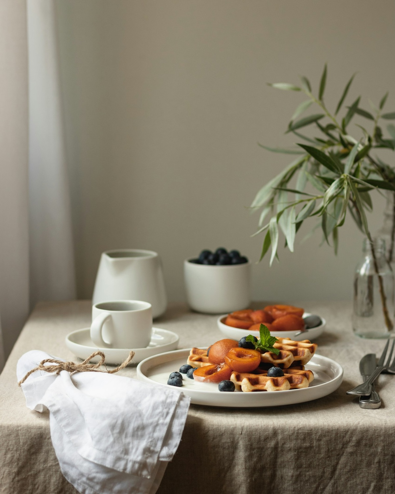

4 malzeme · ara öğün
Fit kurabiye
Hazırlık
180 derecede kızarana kadar pişir; kahvenin yanında ya da ara öğünde.
Sağlıklı bir düzen; günlük yaşamına uyum sağlayan, küçük ve sürdürülebilir adımlarla kurulur. Koşuyolu Rezonans'ta yüz yüze ya da online, sana özel bir beslenme planı.


Sağlıklı bir düzen birkaç gün kusursuz ilerlemekle değil; uzun vadede devam ettirebildiğin alışkanlıklarla oluşur.
Bedeni bir bütün olarak ele alan, belirtilerin ardındaki nedenlere odaklanan yaklaşım.
Beslenme ve takviyeler; ihtiyaçlarına, kullandığın ilaçlara ve kan değerlerine göre planlanır.
Hızlı sonuç vaat eden kısıtlayıcı diyetler yerine, uzun vadede sürdürebileceğin bir düzen.
Ne yediğin kadar nasıl yediğin de önemli; açlık ve tokluk sinyallerini yeniden duymak.
Her gün aynı kahvaltıyı yapmak zorunda değilsin. Dengeli bir tabakta bu dört öğeye özen göster; seç ve tabağını tamamla.
Bazı takviyelerde kullanım zamanı emilim ve tolerans açısından fark yaratabilir. Tahminini seç, cevap belirsin.
Her takviye için tek bir "doğru saat" yoktur; kişinin beslenmesi, kullandığı ilaçlar ve ihtiyaçları da göz önünde bulundurulmalıdır. Takviyeleri gelişigüzel kullanmak yerine ihtiyaca ve kan değerlerine göre planlamak en doğrusudur.
Vücudun doğal arınma sürecinde zaten görev alan sistemler var. Onları desteklemenin yolu; dengeli beslenmek, lif tüketmek, su içmek ve hareket etmek.
Solunumla karbondioksiti uzaklaştırır. Düzenli hareket ve temiz hava bu sistemi destekler.
Vücudun doğal arınma merkezi. Dengeli beslenme ve yeterli lif ile desteklenir.
Kanı süzer ve atıkları uzaklaştırır. Yeterli su içmek en büyük destektir.
Lifli besinler bağırsak düzenini ve sağlıklı mikrobiyotayı destekler.
Instagram'da paylaşılan tariflerden ikisi. Malzemeleri işaretle, hazır olduğunda pişir.
180 derecede kızarana kadar pişir; kahvenin yanında ya da ara öğünde.

Sebzeleri haşla, süz; yağ, yulaf unu ve baharatla püre kıvamına getir. Top yap, 200°C'de 25–35 dakika pişir.
Koşuyolu Rezonans'ta, Altunizade / Üsküdar. Detaylı değerlendirme ve kişiye özel plan.
Randevu al
Nerede olursan ol; görüşmeler, beslenme planı ve takip online.
Bilgi alTakviyeleri gelişigüzel değil; ihtiyaca ve kan değerlerine göre planlamak.
Bilgi al
Boğaz'ın huzurlu atmosferinde sağlıklı beslenme, farkındalık ve nefesi bir araya getiren bir buluşma.

Fonksiyonel tıp diyetisyeniyim. Hızlı sonuç vaat eden kısıtlayıcı diyetler yerine; yoğun ve yorgun dönemlerde bile hayatına uyum sağlayan, sürdürülebilir bir düzen kurmana eşlik ediyorum.
Bu sitedeki içerikler genel bilgilendirme amaçlıdır; tıbbi tanı veya tedavi önerisi yerine geçmez. Bireysel ihtiyaçlar kişiden kişiye değişir.